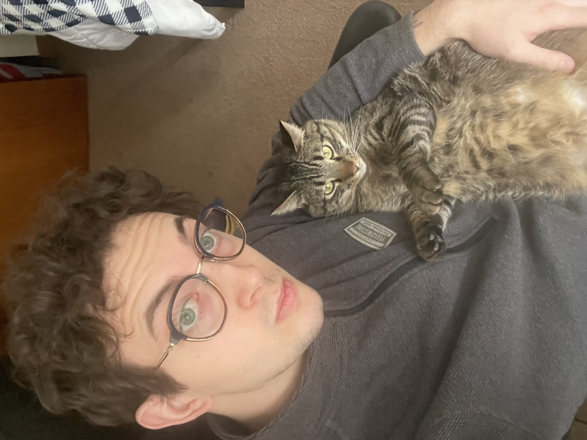

Kaleb
Hi, my name is Kaleb, and I am a second semester senior at UW-Madison. I am majoring in Computer Science and getting a certificate
in Data Science. I originally thought that I would major in Business, Investment, and Banking, but after taking CS 200, I fell in love
with coding and the problem solving aspect and my mind was opened to all the problems that can be solved through code.
When I am not studying for school I enjoy playing video games, running, lifting, doing puzzles and hanging out with my friends. I am
also a member of the Air Force National Guard and have been in for 5.5 years and have been deployed to Saudi Arabia. In an ideal world,
I will get to contirbute to some defense company, working on code for their aircraft or some solution helping the military.
Daria
Hello, my name is Daria Rudykh and I am currently in my final year at UW-Madison! I am double majoring in Chemistry and Computer Science,
and I hope to pursue a Ph.D. in Chemistry after I graduate. I am fascinated by the effects of light on chemical bonds and can talk on and on if you ask me about it.
I also currently do research on polymers and 3D-printing here on campus with the Boydston group!
Besides this class, I am taking CHEM 564, CHEM 562 (Physical Chemistry), COMP SCI 532 (Matrix Methods in Machine Learning), AFRICAN 210.
Outside of class I really enjoy going to the gym, playing video games (especially Stardew Valley!), baking, and reading.
I am currently reading Sapiens by Yuval Noah Harrari and really enjoying it.
Josh

Hello, my name is Josh Charpentier, and I'm currently wrapping up my last semester at UW-Madison!
I am working on completing a bachelor's degree in both computer science and philosophy. I innitially
planned on only pursuing computer science, but ever since my Philosophy 101 class during freshman year,
I've been interested in taking more and more. I'm currently taking classes studying Dante's Diving Comedy
(LITRANS 253), Bayesian Epistemology (PHILOS 504), Database Systems (CS564) and this class!
In my spare time, I primarily like to read, go to the gym, and write, or work on coding projects. Some of the
more recent books I've read have included I Heard You Paint Houses by Charles Brandt, Little Women
by Louisa May Alcott, and Oathbringer by Brandon Sanderson. I would recommend these three to anyone, but
my favorite book of all time is definitely The Alchemist by Paulo Coelho.
Another hobby of mine that I am obsessed with is photography, specifically street photography.
For those unfamiliar with the term, street photography involves going out and walking around,
photographing everyday life and moments. My favorite technology is tied to my passion for authentic photography.
Specifically, my favorite technology is called "content credentials" first introduced by camera manufacturer, Leica.
Content credentials is a technology that embeds a sort of signature onto the metadata of a photo at the time of its capture.
Then, at any point, if AI is used to alter the photo, its content credentials are removed. Not only does this technology
mark authentic work but it also allows anyone to see the entire history of a photo's editing and uploading process.